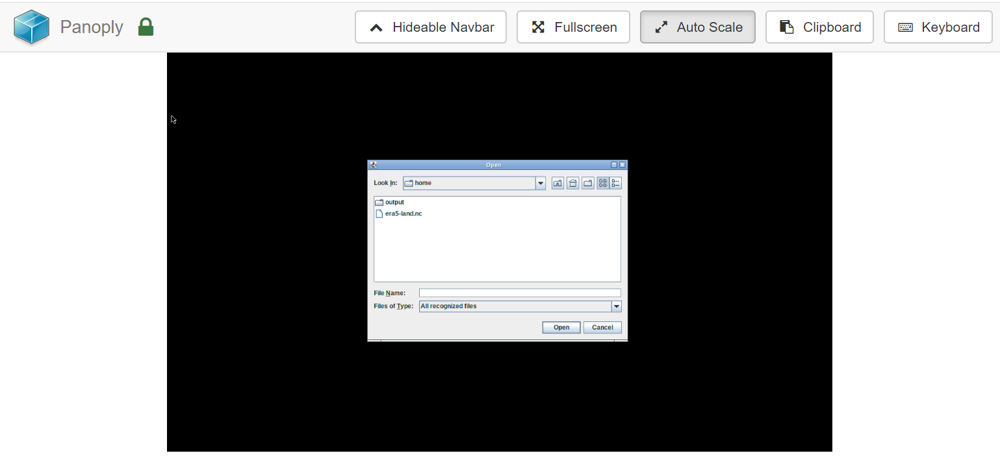
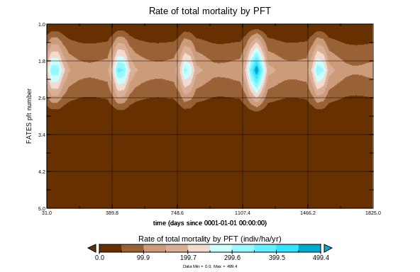

This tutorial is not in its final state. The content may change a lot in the next months.
Because of this status, it is also not listed in the topic pages.
The practical aims at familiarizing you with running CLM-FATES in Galaxy and analyzing the model results.
It will also teach you on how to create Galaxyworkflow for your CLM-FATES simulations to make your research fully reproducible.
Preparing CLM-FATES input data is out of scope for this tutorial. We assume the input data tarball contains the following folders:
atm cpl lnd share
Each sub-folder will then contain all the necessary inputs for running your CLM-FATES case.
For the purpose of this tutorial, input data for a single point location ALP1 (61.0243N, 8.12343E) has been prepared and is ready to use.
hands_on Hands-on: Data upload
Create a new history for this tutorial. If you are not inspired, you can name it fates.
tip Tip: Creating a new history
Click the new-history icon at the top of the history panel
If the new-history is missing:
Click on the galaxy-gear icon (History options) on the top of the history panel
Open the Galaxy Upload Manager (galaxy-upload on the top-right of the tool panel)
Select Paste/Fetch Data
Paste the link into the text field
Press Start
Close the window
By default, Galaxy uses the URL as the name, so rename the files with a more useful name.
tip Tip: Importing data from a data library
As an alternative to uploading the data from a URL or your computer, the files may also have been made available from a shared data library:
Go into Shared data (top panel) then Data libraries
Find the correct folder (ask your instructor)
Select the desired files
Click on the To History button near the top and select as Datasets from the dropdown menu
In the pop-up window, select the history you want to import the files to (or create a new one)
Click on Import
Check the datatype (for both files) is tar
tip Tip: Changing the datatype
Click on the galaxy-pencilpencil icon for the dataset to edit its attributes
In the central panel, click on the galaxy-chart-select-dataDatatypes tab on the top
Select datatypes
Click the Change datatype button
Rename datasets as
As https://zenodo.org/record/4108341/files/inputdata_version2.0.0_ALP1.tar and https://zenodo.org/record/4126404/files/CTSM_FATES-EMERALD_version2.0.0_ALP1_restart_2300-01-01.tar
are not beautiful names and can give errors for some tools,
it is a good practice to change the dataset names by something more meaningful. For example by removing
https://zenodo.org/record/4108341/files/ and https://zenodo.org/record/4126404/files/ to obtain inputdata_version2.0.0_ALP1.tar
and CTSM_FATES-EMERALD_version2.0.0_ALP1_restart_2300-01-01.tar, respectively.
tip Tip: Renaming a dataset
Click on the galaxy-pencilpencil icon for the dataset to edit its attributes
In the central panel, change the Name field
Click the Save button
Add a tag to the dataset corresponding to fates
tip Tip: Adding a tag
Click on the dataset
Click on galaxy-tagsEdit dataset tags
Add a tag starting with #
Tags starting with # will be automatically propagated to the outputs of tools using this dataset.
Check that the tag is appearing below the dataset name
Step 2: Setting up a CLM-FATES simulation
We will be using the CTSM/FATES-EMERALD Galaxy tool.
comment Tip: Finding your tool
Different Galaxy servers may have tools available under different sections, therefore it is often useful to use the search bar at the top of the tool panel to find your tool.
Additionally different servers may have multiple, similarly named tools which accomplish similar functions. When following tutorials, you should use precisely the tools that they describe. For real analyses, however, you will need to search among the various options to find the one that works for you.
hands_on Hands-on: Creating a new CTSM/FATES-EMERALD case
CTSM/FATES-EMERALDTool: toolshed.g2.bx.psu.edu/repos/climate/ctsm_fates/ctsm_fates/2.0.1 with the following parameters:
param-file“inputdata for running FATES EMERALD”: select the inputdata_version2.0.0_ALP1.tar file from your history
Name of your case: ALP1_exp
Expand ‘Customize the model run period’ to change the default values:
Determines the model run initialization type: select hybrid
Reference case for hybrid or branch runs: ALP1_refcase
Reference date for hybrid or branch runs (yyyy-mm-dd): 2300-01-01
Run start date (yyyy-mm-dd). Only used for startup or hybrid runs: 0001-01-01
Restart for running FATES EMERALD: CTSM_FATES-EMERALD_version2.0.0_ALP1_restart_2300-01-01.tar
Provides a numerical count for STOP_OPTION: 5
Sets the run length along with STOP_N and STOP_DATE: nyears
Click Execute
comment Tip: search for the tool
Use the tools search box at the top of the tool panel to find Remove beginningtool.
comment startup versus hybrid
When using startup, the FATES model will start from some arbitrary baseline state that is not linked to any previous run.
Startup runs are typically initialized using a start date of 0001-01-01 except if you change it (start date option).
For any scientific study, starting from an arbitraty baseline state implies you would need to run the model for a long period (between 100 and 200 years)
before being able to use the model outputs. For this reason, we usually make a first simulation (spin-up) in startup mode and reuse this case as a baseline
for our scientific study. We then use hybrid type and give additional inputs (restart files) to our simulation case. It is then important to specify the dates
of your restart files. This is what we do in this tutorial.
Check that the datatype of your outputs (history file) is netcdf
All the history files contain gridded data values written at specified times during the model run.
Depending on the length of your simulation, you may have one or more history files that you can recognize from their names:
ALP1_exp.clm2.h0.yyyy-mm-dd-sssss.nc (for non-monthly history files).
Datatypes are, by default, automatically guessed. Here, as the prefix is .nc, the format is not always recognized as netcdf files.
To cope with that, one can change the datatype manually, as shown below.
tip Tip: Changing the datatype
Click on the galaxy-pencilpencil icon for the dataset to edit its attributes
In the central panel, click on the galaxy-chart-select-dataDatatypes tab on the top
Select datatypes
Click the Change datatype button
Renamegalaxy-pencil the output dataset (history file) to ALP1_exp.nc
Our FATES model has run for 5 years only, so we get a single output file. As previously, we recommend
to rename all netCDF files so that they do not contain any special characters or dots (except for the file extension) or slashes. Some tools, in
particular Panoply, won’t be able to recognize your file if not named properly.
tip Tip: Renaming a dataset
Click on the galaxy-pencilpencil icon for the dataset to edit its attributes
In the central panel, change the Name field
Click the Save button
Getting metadata information for CLM-FATES netCDF outputs
NetCDF xarray Metadata InfoTool: toolshed.g2.bx.psu.edu/repos/ecology/xarray_metadata_info/xarray_metadata_info/0.15.1 with the following parameters:
Netcdf file: ALP1_exp.nc
Click Execute
Inspect the generated output files and identify which variables would provide you some insights about canopy transpiration.
question Questions
What are the short names of the relevant variables? Which one will you pick if you want a result in mm/s?
What are the dimensions of these variables?
solution Solution
FCTR is the canopy transpiration in W/m^2 and QVEGT is in mm/s. Therefore, we would select the latter.
These variables are stored as a function of time and lndgrid and since we have only one grid cell, lngrid=1, hence the time series.
Step 3: Quick visualization with Panoply
Opening up Panoply
hands_on Hands-on: Launch Panoply
Panoply is available as a Galaxy interactive environment and may not be available on all Galaxy servers.
tip Tip: Launch Panoply in Galaxy
Currently Panoply in Galaxy is available on useGalaxy.eu instance, on the “Interactive tools” tool panel section or,
as all interactive tools, from the dedicated useGalaxy.eu subdomain: Live.useGalaxy.eu.
You may have to login again to Live.usrGalaxy.eu (use the same username and password than on other useGalaxy.eu subdomains)
and switch to the correct history.
Check ALP1_exp.nc dataset selected in the netcdf input field
Click Execute
The tool will start running and will stay running permanently
Click on the “User” menu at the top and go to “Active Interactive Tools” and locate the Panoply instance you started.
Click on your Panoply instance
Figure 1: Select dataset
Click on ALP1_exp.nc dataset
Inspect metadata
hands_on Hands-on: Inspect dataset
Inspect dataset content
Here you can look at the dataset (ALP1_exp.nc) and related variables (FSDS, FSA, AREA_TREE, BIOMASS_CANOPY, etc.)
question Question
What is the long name of MORTALITY?
What is its physical unit?
solution Solution
Rate of total mortality per PFT
indiv/ha/yr
Plot the total carbon in live plant leaves (LEAFC)
Cutomize your plot and save it as png file in the output folder. Remember that
if you do not save in the output folder, your plot will get lost.
question Question
Can you observe any pattern? Does it make any sense?
solution Solution
We can clearly see a seasonal cycle.
Figure 2: LEAFC
Plot the rate of total mortality per PFT (MORTALITY)
Select a 2D plot with time as x-axis and colored by the rate of total mortality per PFT.
Make sure to adjust the y-axis and save your plots in the output folder (as png file).
question Question
Can you observe any pattern? Does it make any sense?
solution Solution
We can clearly see a seasonal cycle.
Figure 3: total mortality per PFT
comment Quit Panoply properly to save your plots!
To make sure all your plots stored in outputs folder get exported to Galaxy, you need to quit panoply: File –> Quit Panoply.
Step 4: Using Galaxy tools for analysing your CLM-FATES simulation
Panoply is a great tool for exploring the results of your simulations but what we would like is to automate the generation of the plots
so that we can reuse it for any simulations.
hands_on Hands-on: Select and plot LEAFC
Select the total carbon in live plant leaves (LEAFC)
NetCDF xarray SelectionTool: toolshed.g2.bx.psu.edu/repos/ecology/xarray_select/xarray_select/0.15.1 with the following parameters:
Input netcdf file: ALP1_exp.nc
Tabular of variables: Metadata infos from ALP1_exp.nc
Choose the variable to extract: LEAFC
Click Execute
Rename Dataset to NetCDF xarray Selection on ALP1_exp.nc
tip Tip: Renaming a dataset
Click on the galaxy-pencilpencil icon for the dataset to edit its attributes
In the central panel, change the Name field
Click the Save button
Clean date column for plotting
Replace parts of textTool: toolshed.g2.bx.psu.edu/repos/bgruening/text_processing/tp_find_and_replace/1.1.3 with the following parameters:
File to process: NetCDF xarray Selection on ALP1_exp.nc
Find pattern: 00:00:00
Find-Pattern is a regular expression: Select No
Replace all occurences of the pattern: Select Yes
Case-Insensitive search: Select No
Find whole-words: Select Yes
Ignore first line: Select Yes
Find and Replace text in: Select entire line
Click Execute
Rename Dataset to LEAFC_clean.tabular
tip Tip: Renaming a dataset
Click on the galaxy-pencilpencil icon for the dataset to edit its attributes
In the central panel, change the Name field
Click the Save button
Plot the total carbon in live plant leaves (LEAFC)
To make a plot, you can use Scatterplot w ggplot2tool with the following parameters:
“Input in tabular format”: LEAFC_clean.tabular
“Column to plot on x-axis”: 1
“Column to plot on y-axis”: 4
“Plot title”: Total carbon in live plant leaves
“Label for x axis”: Time
“Label for y axis”: LEAFC (kgC ha-1)
In Advanced Options change Type of plot to Points and Lines.
And finally in Output options set width of output to *19.0 and height of output to 5.0*.
Click on Execute.
Viewgalaxy-eye the resulting plot:
Step 5: Convert your analysis history into a Galaxyworkflow
hands_on Hands-on: Extract workflow
Go to the History Options menugalaxy-gear menu
Select the Extract Workflow option.
Remove any unwanted steps
Rename the workflow to something descriptive
For example: CLM-FATES_ ALP1 simulation (5 years).
If there are any steps that shouldn’t be included in the workflow, you can uncheck them.
Click “Create Workflow”
Click on “edit” and check your workflow
Check all the steps
Step 6: Change your CLM-FATES case and rerun your workflow
We would like to run a CLM-FATES case where the atmospheric Carbon Dioxyde Concentration (CO2) is increased by a factor of 4.
hands_on Hands-on: Compare the two simulations
Using the results from your two CLM-FATES simulations and the generated plots, assess the impact
of an increase in the atmosperhic CO2 on the outputs of the model.
Edit your workflow and customize it to run your new CO2 experiment. For this you would need to
add an extra step to extract the first history file from the history collection and generate the
corresponding plot. The final workflow would be similar to the one shown below:
Figure 4: FATES workflow
question Question
Is the model response to this significant increase of atmospheric CO2 what you expected?
Justify your answer.
Is the current workflow (in particular the variables selected for the plots) the best choice?
What changes/additions would you recommend?
solution Solution
Running 5 years is already sufficient to highlight significant changes.
Many suggestions can be given here. One simple addition can be the generation of plots where
both simulations are represented on the same plot.
Share your work
One of the most important features of Galaxy comes at the end of an analysis. When you have published striking findings, it is important that other researchers are able to reproduce your in-silico experiment. Galaxy enables users to easily share their workflows and histories with others.
To share a history, click on the galaxy-gear icon in the history panel and select Share or Publish. On this page you can do 3 things:
Make History Accessible via Link. This generates a link that you can give out to others. Anybody with this link will be able to view your history.
Make History Accessible and Publish. This will not only create a link, but will also publish your history. This means your history will be listed under Shared Data → Histories in the top menu.
Share with a user. This will share the history only with specific users on the Galaxy instance.
comment Permissions
Different servers have different default permission settings. Some servers create all of your datasets completely private to you, while others make them accessible if you know the secret ID.
Be sure to select Also make all objects within the History accessible whenever you make a history accessible via link, otherwise whomever you send your link to might not be able to see your history.
hands_on Hands-on: Share history
Share your history with your neighbour (ask for his/her galaxy username).
Find the history shared by your neighbour. Histories shared with specific users can be accessed by those users under their top masthead “User” menu under Histories shared with me.
comment Publish your history to https://workflowhub.eu/
One step further is to share your workflow on https://workflowhub.eu where it
will be stored in a Galaxyworkflow format as well as in Common Workflow Language.
It provides standardised workflow identifiers and descriptions needed for workflow discovery, reuse, preservation, interoperability and monitoring and metadata harvesting using standard protocols.
Please note that https://workflowhub.eu is still under active development.
Conclusion
We have learnt to run single-point simulations with FATES-CLM and generate workflows for multi-site scenarios.
keypoints Key points
CLM-FATES
Quick visualization of your results with Panoply
Create multi-case simulations with a Galaxy workflow
References
Taking off the training wheels: the properties of a dynamic vegetation model without climate envelopes, CLM4.5(ED), 2015.10.5194/gmd-8-3593-2015
Feedback
Did you use this material as an instructor? Feel free to give us feedback on how it went.
Batut et al., 2018 Community-Driven Data Analysis Training for Biology Cell Systems 10.1016/j.cels.2018.05.012
details BibTeX
@misc{climate-fates,
author = "Anne Fouilloux",
title = "Functionally Assembled Terrestrial Ecosystem Simulator (FATES) (Galaxy Training Materials)",
year = "2021",
month = "01",
day = "06"
url = "\url{/training-material/topics/climate/tutorials/fates/tutorial.html}",
note = "[Online; accessed TODAY]"
}
@article{Batut_2018,
doi = {10.1016/j.cels.2018.05.012},
url = {https://doi.org/10.1016%2Fj.cels.2018.05.012},
year = 2018,
month = {jun},
publisher = {Elsevier {BV}},
volume = {6},
number = {6},
pages = {752--758.e1},
author = {B{\'{e}}r{\'{e}}nice Batut and Saskia Hiltemann and Andrea Bagnacani and Dannon Baker and Vivek Bhardwaj and Clemens Blank and Anthony Bretaudeau and Loraine Brillet-Gu{\'{e}}guen and Martin {\v{C}}ech and John Chilton and Dave Clements and Olivia Doppelt-Azeroual and Anika Erxleben and Mallory Ann Freeberg and Simon Gladman and Youri Hoogstrate and Hans-Rudolf Hotz and Torsten Houwaart and Pratik Jagtap and Delphine Larivi{\`{e}}re and Gildas Le Corguill{\'{e}} and Thomas Manke and Fabien Mareuil and Fidel Ram{\'{\i}}rez and Devon Ryan and Florian Christoph Sigloch and Nicola Soranzo and Joachim Wolff and Pavankumar Videm and Markus Wolfien and Aisanjiang Wubuli and Dilmurat Yusuf and James Taylor and Rolf Backofen and Anton Nekrutenko and Björn Grüning},
title = {Community-Driven Data Analysis Training for Biology},
journal = {Cell Systems}
}
congratulations Congratulations on successfully completing this tutorial!
 Anne Fouilloux
Anne Fouilloux